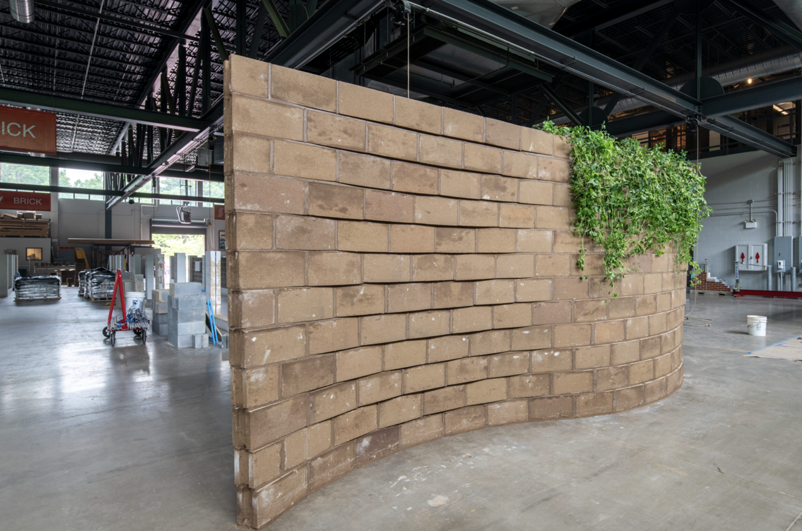
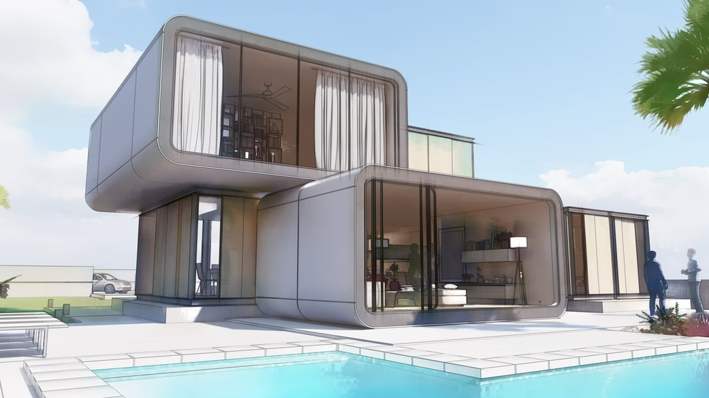
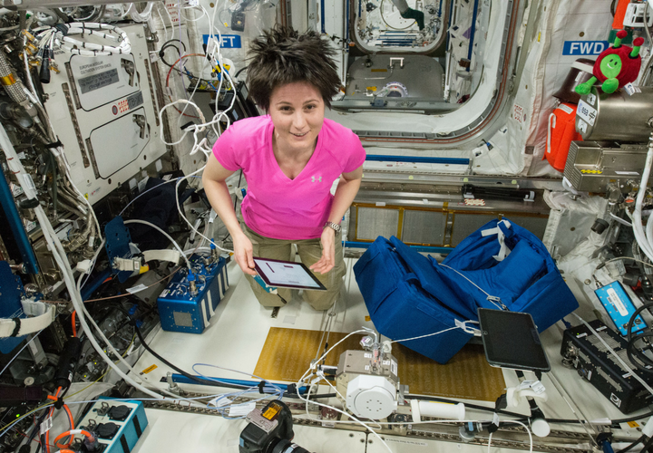
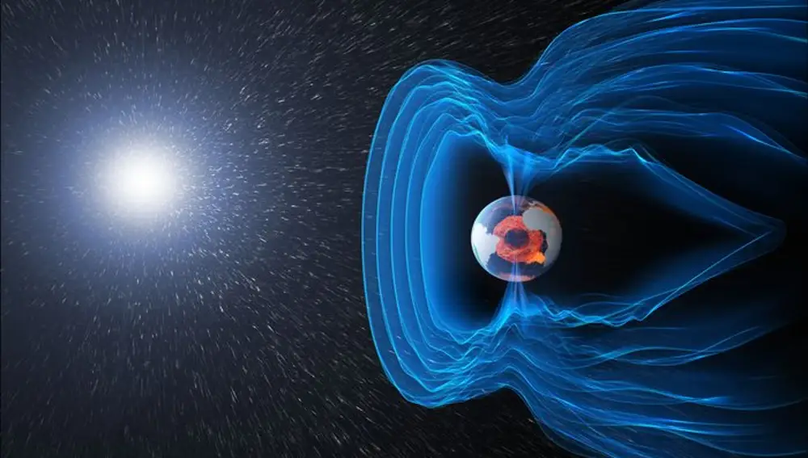
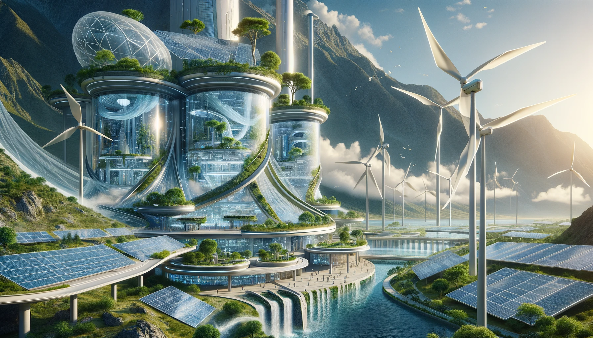
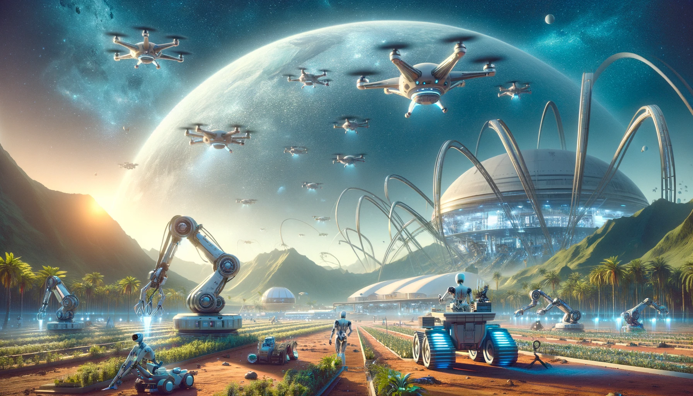
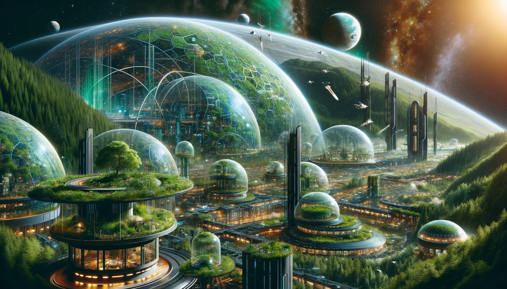
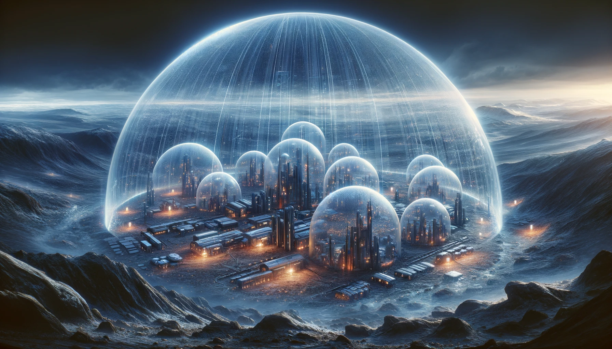

¡Arquitectura Innovadora!
Materiales Avanzados y Sostenibles:

• Investigar y proponer el uso de materiales que puedan ser cultivados biológicamente en el sitio, como micelio (hongos) o algas, que son renovables y pueden adaptarse a diferentes ambientes.
• Desarrollar compuestos que cambian su estructura en respuesta a la radiación solar o a cambios de temperatura, permitiendo una regulación térmica pasiva.
Diseño Modular y Escalable:

• Crear un sistema de construcción modular que pueda ser fácilmente ensamblado, desmontado y reconfigurado para adaptarse a las necesidades cambiantes de la población.
• Implementar módulos que se autoensamblen utilizando robótica avanzada o nanotecnología.
Adaptación a la Gravedad:

• Diseñar estructuras que aprovechen una gravedad más baja para crear espacios que serían imposibles en la Tierra, como habitáculos aéreos o edificios con grandes voladizos.
• En entornos de alta gravedad, desarrollar edificaciones con estructuras de soporte reforzadas y técnicas de construcción que minimicen el estrés estructural.
Protección contra la Radiación:

• Integrar materiales y diseños que ofrezcan protección contra la radiación cósmica y solar, como aleaciones metálicas avanzadas o polímeros de alta densidad.
• Utilizar el terreno natural, como cuevas o formaciones rocosas, para proporcionar barreras protectoras contra la radiación.
Aprovechamiento del Clima:

• Diseñar sistemas de captación de agua que recolecten la humedad atmosférica o el hielo subterráneo, adaptándose a las variaciones climáticas.
• Incluir elementos de diseño pasivo que maximicen la luz natural y la ventilación para mantener un ambiente interior confortable.
Automatización y Autonomía:

• Incorporar sistemas de automatización para el mantenimiento y la operación de las estructuras, utilizando inteligencia artificial para optimizar el uso de energía y recursos.
• Diseñar edificaciones que sean capaces de autorepararse utilizando nanotecnología o materiales inteligentes que respondan a daños o desgaste.
Integración con el Ecosistema:

• Planificar asentamientos que se integren armoniosamente con el ecosistema local, minimizando el impacto ambiental y promoviendo la biodiversidad.
• Utilizar el paisaje como parte del diseño arquitectónico, creando espacios que fluyan entre el interior y el exterior.
Tecnología de Escudos Ambientales:

• Implementar escudos energéticos o campos de fuerza que puedan desviar vientos extremos o proteger contra fenómenos meteorológicos severos.
• Diseñar sistemas de filtrado y barreras que protejan a los habitantes de posibles toxinas o patógenos atmosféricos.